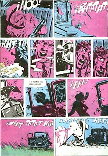
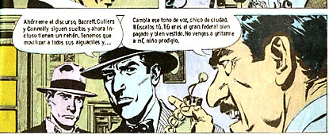
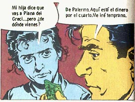

"Cuando quiero conocer las últimas noticias,
leo el Apocalipsis"
(Leon Bloy)
(Leon Bloy)
Cultura y contracultura: literatura, religión
y otras vanidades.
Argentina, s. XXI DC
Inicio
Página personal
Escribime
ICQ: 23232433
|
Savarese
Dibujos: Mandrafina Guión: Robin Wood
|
 |
|  | |
|  | |
|
fotos del apocalipsis | |